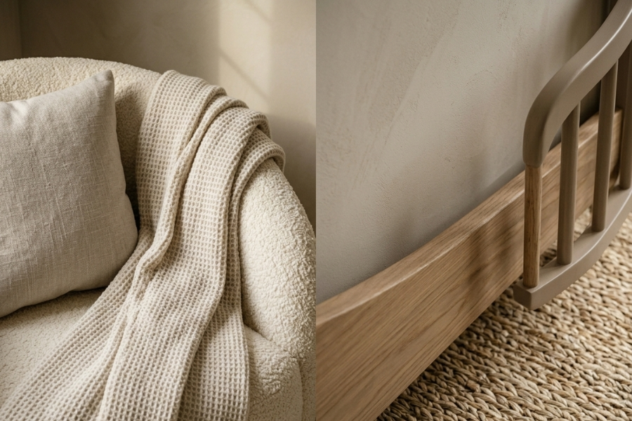
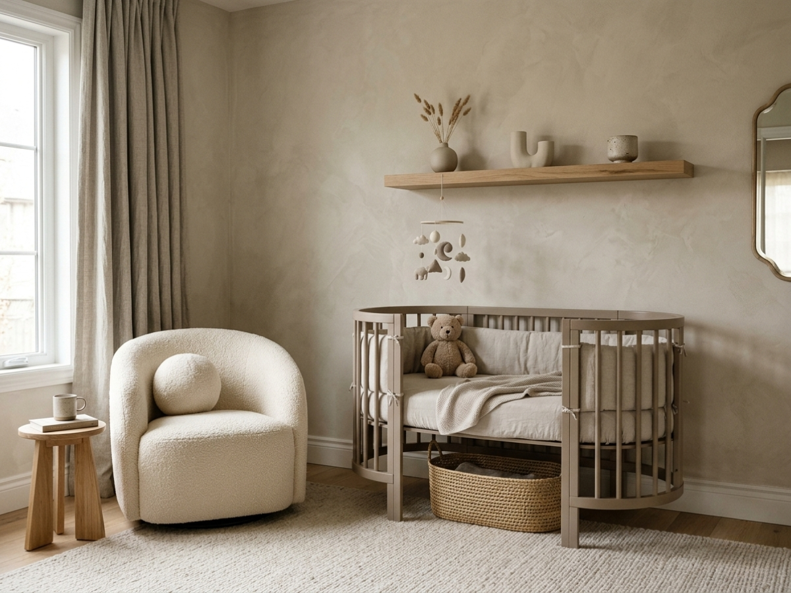
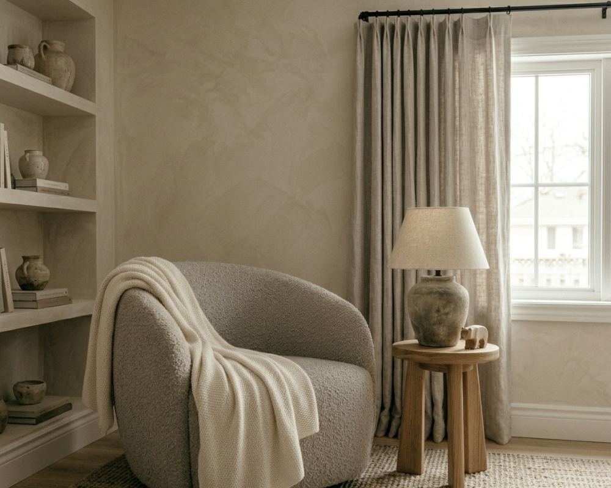
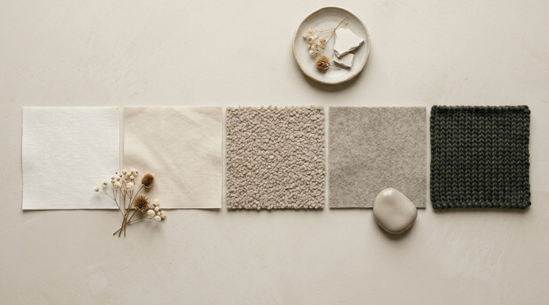
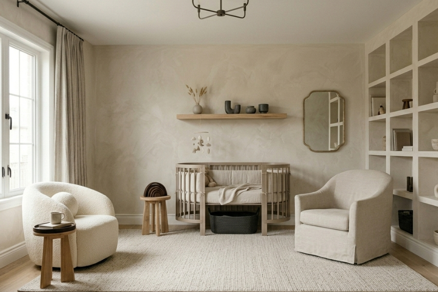
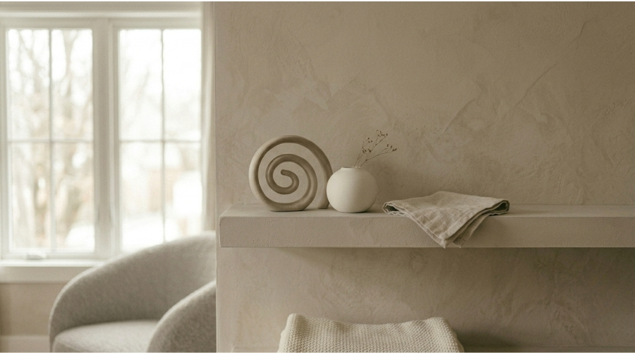

Tonal Texture Edit
Knit throw and oak crib detail in layered warm neutrals
View ProductAs an affiliate, we may earn a commission from qualifying purchases at no cost to you. This helps support our curated sanctuary.
Exploring the quiet richness that exists between white and warm — a guide to tonal dressing for rooms.

Tonal dressing is the art of creating depth and interest using variations within a single color family. Rather than relying on contrasting colors to create visual impact, we explore the subtle gradations that exist between shades, allowing texture and form to provide the complexity.
In nursery design, this approach creates unprecedented calm. When the eye isn't distracted by competing colors, it can focus on the interplay of light and shadow, the richness of natural materials, and the beauty of simple forms. The result is a space that feels both sophisticated and serene — perfect for the quiet moments that define early parenthood.
Our signature palette moves through five carefully calibrated tones, each with its own personality while maintaining perfect harmony with the whole.
#faf9f6
The lightest anchor. Ivory brings warmth to white while maintaining its freshness. Perfect for walls and large textile pieces where you want softness without starkness.
#f4f4f0
Grounded neutrality. Bone has depth without weight, making it ideal for furniture pieces and window treatments that need presence without dominance.
#e8ddd4
The heart of warmth. Putty brings earthiness without heaviness, perfect for accent pieces and textiles that need to feel both luxurious and approachable.
#c9bfb5
Sophisticated depth. Greige provides definition and grounding, ideal for larger furniture pieces and architectural elements that anchor the space.
#2f3430
The quiet dramatic. Charcoal provides contrast and sophistication in small doses — perfect for hardware, frames, and accent details that add definition.
Start with your largest surfaces — walls and floor. Choose the lightest tone from your palette family for walls, creating a canvas that will make everything else appear to glow. For floors, consider natural wood tones that complement your chosen palette or select the mid-tone shade for painted surfaces.
Layer your furniture in the middle tones, allowing each piece to have its own personality while maintaining family harmony. Reserve your darkest tone for accents — hardware, picture frames, small decorative objects that provide definition without overwhelming.
The magic happens in the textiles. Use varying textures in similar tones to create depth: a smooth linen curtain in bone, a nubby bouclé cushion in putty, a soft wool rug in greige. The eye reads these as one harmonious palette while the tactile experience remains rich and varied.
True sophistication whispers rather than shouts — it's found in the subtle gradations that create depth without distraction.
— Color Philosophy

These pieces showcase the subtle power of tonal dressing, creating depth and interest through texture rather than contrasting color.
Tonal Harmony

Knit throw and oak crib detail in layered warm neutrals
View Product
Five curated fabric swatches from ivory to charcoal
View Product
Full room in harmonious greige and ivory tones
View Product
Sculptural ceramic objects in bone and stone tones
View Product"The most beautiful rooms aren't about the colors you choose — they're about the relationships between them, the subtle conversations that happen when tones understand each other completely."Closing Note — Velvet & Cradle
Receive weekly curated nursery inspiration and exclusive early access to our designer guides directly in your inbox.